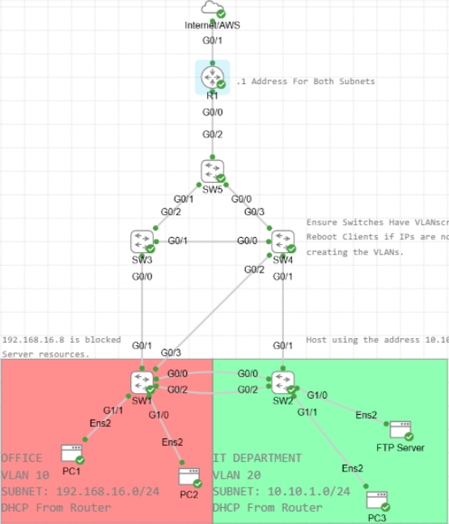
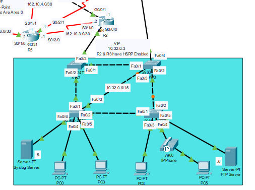
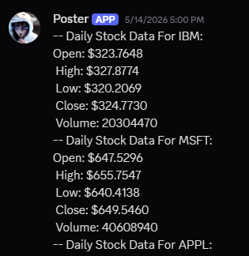
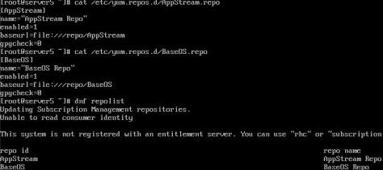
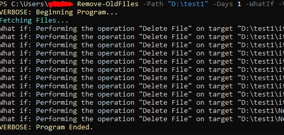

Overview
This portfolio gives an overview of several projects that I have created. My IT Certifications are listed on my LinkedIn profile. Full documentation for projects can be found on my GitHub or LinkedIn.
This portfolio gives an overview of several projects that I have created. My IT Certifications are listed on my LinkedIn profile. Full documentation for projects can be found on my GitHub or LinkedIn.

For my final project in my degree program, I created a hybrid environment using Cisco Modeling Labs and AWS. I created multiple resources in AWS and CML to simulate a hybrid environment. I used YAML to configure an FTP Server. I created a web server in AWS and configured a VPN connection between the two environments. I also created ACLs to restrict access to certain resources from both environments. The full project report can be sent upon request.

After passing my CCNA exam, I gained a solid foundation in networking concepts and technologies. I used that knowledge to create a big project that incorporates various networking devices and protocols. I cover topics such as OSPF, VLANs, RSTP, IPv6, DHCP, PAT, Port Security, and more. This project allowed me to apply my skills and further deepen my understanding of networking principles. The full project documentation can be found here.

With Wireshark, I captured traffic sent from my computer to an HTTP website. From there, I used filters to find the connection. I analyzed the TCP connection, HTTP request, and HTTP response from my computer and the web server. Sensitive information was removed. The full analysis can be found here.

Using Python, I created a Discord bot that automatically sends messages to a Discord channel. Using an API, I can send daily stock market data to the Discord channel. This bot also appends data to a file on my computer, allowing me to track stock market data over time. Documentation for this project has not been created. Various other Python projects can be found on my GitHub.

For my RHCSA exam, I had to learn how to configure a RHEL 9 Enterprise Linux system. After I passed my exam, I created my own configuration from scratch. I used a minimal install to ensure I had the bare essentials to run the server. I created local repositories, configured a web server on a unique port, and granted it SELinux permissions. I modified user permissions, configured autofs between two machines, and created shell scripts to automate tasks. Documentation can be found on my LinkedIn under "Projects."

I created several PowerShell modules that do certain tasks. One module deletes files older than a specified number of days. Another module finds large files and displays their size and location on the drive. Another module syncs folders together. These modules have verbose, progress bars, and error handling implemented. Partial documentation can be found on my LinkedIn under "Projects." Full release of the code is underway and will be posted on my GitHub.